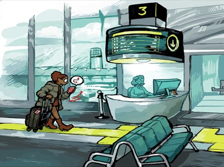

Antecedentes
Cómo los esfuerzos de inclusión de la industria de la aviación pueden alcanzar soluciones innovadoras si se implementara este tipo de aplicación como lo es You ally air:Las aerolíneas y los aeropuertos están en las noticias en este momento por no proporcionar accesibilidad y apoyo consistentes para los viajeros discapacitados. Margaret Harrop quedó varada en el aeropuerto de Newcastle después de que el personal de "asistencia especial" llegara tarde al avión. El aeropuerto de Darwin no proporcionó una rampa para abordar el avión para el viajero discapacitado Brad Wszola. Y Tony Hudgell, de ocho años, estuvo atrapado durante más de cinco horas por su silla de ruedas perdida, que luego llegó dañada, cuando él y su familia regresaban de un viaje a Laponia. Estas historias no son incidentes aislados; ponen de relieve una falta de concienciación a gran escala en el sector de la aviación. Y esta falta de conciencia se pone de relieve incluso en el simple hecho de que las aerolíneas y los aeropuertos siguen utilizando un lenguaje como 'asistencia especial'. El acceso a los viajes aéreos es una parte integral de la vida laboral y familiar de muchas personas. Como todos sabemos, volar ya es estresante: “¿Olvidé mi pasaporte? ¿Tengo demasiados líquidos?”. Hay personas con discapacidades visuales, que se les genera un aumento monumental en el estrés al considerar si podrán llegar a salvo, con la ayuda que ofrece esta app habría mucha ayuda para la movilidad, la salud y la dignidad intactas, por lo que la aplicación You ally air serviría mucho para reducir estas situaciones.
